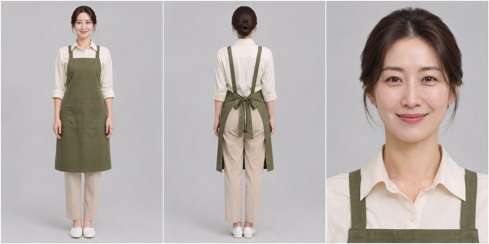
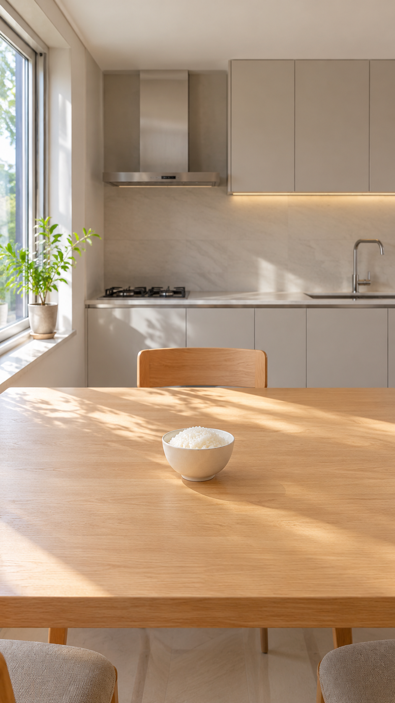

ORDER / STUDIO · FIRST VIDEO TEST
같은 병을,
다른 세계로.
생성 완료 · 제품 캡 일관성 미통과
Dan이 고른 1순위 E 제품 릴레이. 손그림 → 클레이 → 실사 주방에서 같은 참기름 병을 전달하는 15초 시험입니다. 추가 판·추가 이미지 생성 없이 기존 참조 3장을 사용했습니다.
제작 기록
- 영상 모델
- Seedance 2.5 · 15초 · 480p · 9:16 · 오디오 생성 요청
- 제출 판 수
- 1 / 승인 1 · 추가 제출 없음
- 사전 견적
- 45크레딧
- 영상 Job ID
- 48c2c695-7e9e-4d1d-add2-fb9c12d3ab55
- 프롬프트 작성
- 구독 GPT 제작 세션 · gpt-6-astra
- GPT 세션 ID
- 01a1f77c-cddd-7d11-9f10-2eed23ec9117
결과 확인
확인한 범위: 대표 장면의 육안 확인, 파일 메타데이터, 브라우저 재생. 전 프레임·음향의 상세 검수는 하지 않았습니다. 나온 것: 손그림→클레이→실사 주방의 서로 다른 표현, 참기름 병 전달, 마지막 흰밥에 기름을 더하는 장면. 문제: 첫 장면에서 병도 그림처럼 처리되어 전 구간 실물 제품 유지 조건을 지키지 못했습니다. 라벨 재현도 완전하지 않습니다. 마지막 사용 장면에서는 원본의 뾰족한 노즐 캡이 다른 플립형 캡·주둥이로 바뀝니다. 첨부만으로 개방 방식을 확정할 수 없다는 GPT의 판단이 있었지만 그대로 생성한 시험이며 이 부분은 제품 사용 기준 자료 보강이 필요합니다. 판단: 서로 다른 세계를 잇는 릴레이 구상은 드러났지만, 제품 정체성·사용 구조를 통과한 완성 광고로 승인할 수 없습니다. 눈길을 끄는 정도와 전달 동작의 자연스러움은 영상을 직접 보고 판단해야 합니다. 파일은 약 15.05초, 480×854, AAC 스테레오 오디오 트랙 포함입니다. BGM·효과음의 청취 품질은 이 기록에서 검증했다고 주장하지 않습니다. Dan 승인 1판 / 실제 제출 1판. 추가 생성·수정판·새 이미지 생성은 하지 않았습니다.
사진 순서와 역할



모두 일반 참조로 전달했습니다. 시작·끝 프레임으로 지정하지 않았습니다.
실제 제출 프롬프트 원문
시댄스 2.5용 15초 CF, 480p, 9:16 세로. 참조 순서: 제품→인물→장소. 첨부는 일반 참조이며 시작 프레임 지정이 아니다. 새로 만든 손그림 종이 주방 속 손이 화면 경계를 넘어 실사 참기름 병을 건네며 시작한다. 단순한 클레이 주방의 손이 같은 병을 이어 받고, 마지막에는 이미지3의 햇빛 드는 주방과 원목 식탁에서 이미지2의 성인 여성이 아이보리 셔츠·올리브 앞치마 차림으로 병을 받아 흰밥에 참기름을 짠다. 전달 방향과 손동작을 연결해 하나의 병이 세계를 이동하는 흐름을 명확히 한다. 배경과 받는 손의 표현만 달라지며, 병은 전 구간 실사로 이미지1의 어두운 적갈색 몸체·노란 노즐 캡·기존 라벨·비율을 유지한다. 병 복제·재디자인 금지. 기름은 병의 적갈색과 구분되는 자연스러운 반투명 황금빛으로 표현한다. 여성의 외모와 의상은 마지막 실사 장면에만 적용한다. 새 앵커 없이 첨부 주방을 활용한다. 경쾌하고 따뜻한 오리지널 BGM과 전달·착지·사용 동작의 효과음을 영상과 함께 생성한다. 새 글자·자막·점수판·로고 생성 금지, 카피는 후작업. 미확인 효능·수치 표현 금지. 세부 컷·카메라·전환·음악 구성은 제작 단계에서 설계한다.
GPT 작성 이유
15초 안에 전달 흐름과 실제 사용이 읽히도록 손그림·클레이 두 세계와 마지막 실사 주방으로 구성했다. 이미지3의 원목 식탁·흰밥·자연광을 그대로 활용할 수 있어 별도 장소 앵커는 필요하지 않다. 제품은 실사로 고정하고 인물 참조는 마지막 여성에게만 적용한다. 실제 기름 색과 노즐 개방 방식은 첨부만으로 확정되지 않으므로 제작 시 확인이 필요하다. 효능·성능 수치는 추가하지 않았다.
전달한 짧은 오더
시댄스 2.5, 15초 영상, 480p, 9대16. 영자씨의부엌 스퀴즈 참기름 CF(실사). 시트는 제품→인물→장소 순서. 제품 원본의 어두운 적갈색 병·노란 노즐 캡·라벨·비율 유지. 병 색과 기름 색은 구분. 인물은 기존 아이보리 셔츠·올리브 앞치마의 성인 여성 기준. 새 장소는 기존 주방 앵커를 그대로 쓸 수 있는지 검토하고 필요하면 별도 준비. 새 글자·점수판 문자·로고 생성 금지, 카피는 후작업. BGM필수. 미확인 효능·수치는 넣지 말 것. 아래 사건의 핵심은 유지하되 컷·카메라·전환·음악의 세부 구성은 제작 세션에서 설계. 이번 Dan 승인: 이 안으로 영상은 한 판만 제작. 당신의 역할은 실제 제출용 프롬프트 작성이며 도구 실행은 하지 말 것. 손그림 주방 속 손이 화면 경계를 넘어 실물 그대로의 참기름 병을 건네는 불가능한 장면으로 시작. 서로 구별되는 소수의 시각 세계가 같은 제품을 손에서 손으로 이어 받고, 마지막에는 기존 집 주방의 여성이 병을 받아 흰밥에 참기름을 짠다. 바뀌는 것은 배경과 받는 손의 표현 방식뿐이고 제품의 외형·라벨·비율은 처음부터 끝까지 같다. 원작 명화·캐릭터를 복제하지 말고 새로 만든 단순한 그림 세계를 쓴다. 전달이 이어지는 시각적 연결과 마지막 실제 사용이 중심. 추가 제작 판단: 15초이므로 2개의 새 시각 세계(손그림 종이 주방→단순한 클레이 주방)와 마지막 실사 주방으로 읽기 쉽게 연결. 실물 병은 전 구간 실사이며 복제·재디자인하지 말 것. 이미지2는 마지막 여성의 신원/의상 기준이지 손그림이나클레이인물로바꾸라는뜻아님. 첨부3장은genericreference이지각장면시작프레임지정아님. 새 앵커 추가 없이 첨부로 충분한 범위로 설계. 카피는후작업이라생성글자금지, BGM과전달동작의효과음은영상과같이생성. 원작명화·캐릭터·음악·다른브랜드이름은프롬프트에넣지말것.